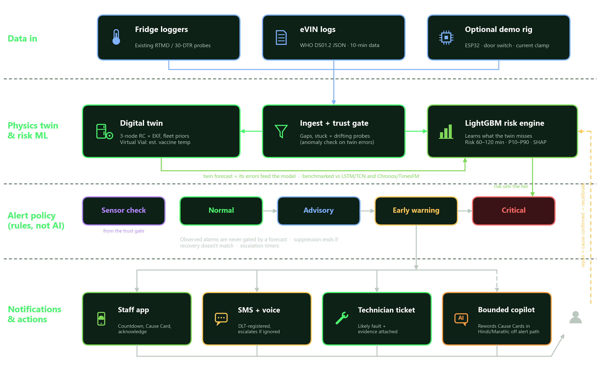
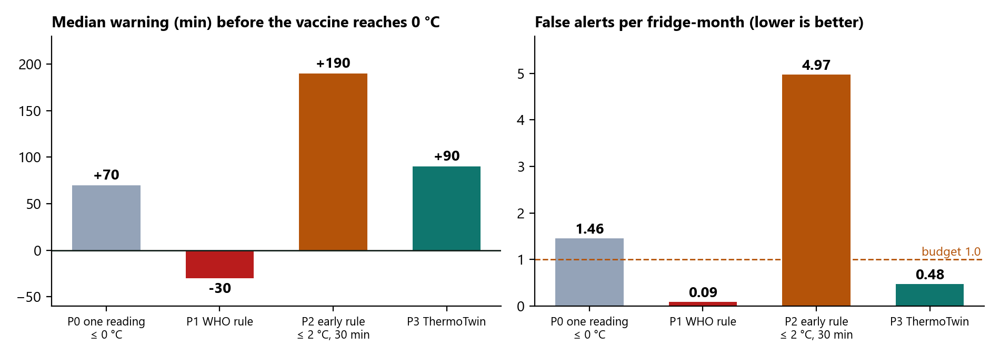

All results are from the ColdChain Gym simulator, not field data.
Vaccines must stay at +2 to +8 °C. Freeze-sensitive vaccines (pentavalent, hepatitis B, DTP-containing, PCV, IPV) are permanently damaged at or below about −0.5 °C, and a frozen vial looks normal. Indian studies found vaccines below 0 °C for roughly 10–15% of storage time. Today's WHO alarms fire only after damage starts (10 h above +8 °C, or 1 h at or below −0.5 °C). India's ~25,000 eVIN loggers across about 29,000 cold-chain points (UNDP) already record every fridge, but the data is used for stock, not prediction.
Ways cooling goes out of control: too cold (thermostat set or drifting cold, relay stuck on, ice-lined cold spots, overshoot after a power cut); too warm (power cut, door left open, warm stock, heat waves); slow decline (compressor wear, refrigerant leak, worn gasket, dusty condenser, ice build-up); and a lying sensor (stuck, drifting, dropouts).
| Workstream | Delivered | Status |
|---|---|---|
| Problem selection | Analysis of all 11 problem statements across the three packs; pitch playbook; T4-1 chosen. | Done |
| Research | Deep-research report: WHO PQS / eVIN standards, market (Nexleaf, Berlinger, Haier, Controlant…), physics and ML methods, public datasets, alarm-fatigue evidence, and a list of claims to avoid. | Done |
| PRD | Revision 4 (Claude Doc, Word export): requirements, alert policy, ML spec, design decisions, scientific validity checks, hardware section, training-data plan, model comparison. | Done |
| Pitch deck | 8-slide Canva deck on the CODE APEX template; submitted for Round 1 (11 Oct) and since updated: swimlane architecture, features with digital-twin and Virtual Vial panel, lifeboat routing, scope cards, honest impact wording, sourced figures. | Done |
| Demo UI | Offline clickable demo: phone app (Home, Alerts, Cause Card, Help; Hindi toggle) and district website (Overview, Facilities, Alerts, Maintenance, Exposure Ledger, Benchmark, Settings, ILR-1 digital twin, Copilot). Packaged as ThermoTwin_UI_demo.zip. | Done |
| Core system | Python package thermotwin/: simulator, freeze labels, Kalman twin, features, LightGBM hazard model, calibration, alert policies, Replay Benchmark; 6 passing tests; one-command run (~45 s). | Done (freeze) |
| Pitch support | Speaker script for slides 5–7, UI demo script, answers on the dataset, LightGBM, the Virtual Vial formula and its validity, vaccine-aware alerts. | Done |
| Not yet done | Heat model, cause classifier, sensor-check model, API, UI wired to the live model, LSTM/foundation baselines, realism checks on public data, demo hardware rig, vaccine-aware alerts. | Planned (§5) |

Data in (existing loggers, eVIN) → ingest and trust gate → digital twin with fleet priors (Virtual Vial) → LightGBM risk engine → rule-based alert tiers (Sensor check, Normal, Advisory, Early warning, Critical) → staff app, SMS/voice, technician ticket, bounded copilot → technician feedback and recalibration. Observed alarms are never gated by a forecast; the LLM only rewords Cause Cards.
| Piece | Method |
|---|---|
| Simulator (ColdChain Gym) | 3-node RC heat model (air, product, enclosure) at 1-minute steps, thermostat with hysteresis, clinic-hour door openings, Indian room temperatures, and 7 injected faults (thermostat drifting cold, relay stuck on, compressor wear, gasket leak, power cut, stuck probe, drifting probe). Logs every 10 minutes like eVIN. |
| Digital twin / Virtual Vial | Kalman filter per fridge, state [air, slope, vial]. The vial follows Newton's law of cooling: dTvial/dt = (Tair − Tvial)/τ, with τ = mc/hA from the fridge-class prior. Outputs the vial estimate with an error band and 30/60/120-minute physics forecasts. |
| Risk model | LightGBM discrete-time hazard over twelve 10-minute slots; inputs are temperature-only features plus twin outputs. Gives calibrated 1-h and 2-h risk (isotonic), time-to-breach P10/P50/P90, and SHAP drivers for the Cause Card. |
| Labels | Freeze event = true vaccine temperature ≤ −0.5 °C for 60 min (from simulator ground truth only). Lead time is measured to the true vaccine crossing 0 °C. |
| Alert threshold | Chosen on validation fridges as the most sensitive setting within a budget of 1 false alert per fridge-month. |
240 fridges × 21 days (5,040 fridge-days), 178 freeze events. Split by fridge: 60% train, 20% validation, 20% test (48 fridges, 41 events).

| Policy | Caught | Median warning | False alerts / fridge-month |
|---|---|---|---|
| P0 one reading ≤ 0 °C | 41/41 | 70 min before | 1.46 |
| P1 WHO rule (≤ −0.5 °C for 60 min) | 41/41 | 30 min after | 0.09 |
| P2 early rule (≤ 2 °C for 30 min) | 41/41 | 190 min before | 4.97 |
| P3 ThermoTwin | 41/41 | 90 min before | 0.48 |
Reading the result. ThermoTwin warns about two hours earlier than the WHO rule, within the false-alert budget. The simple early rule warns sooner but would send about five false SMS per fridge per month, which is the alarm fatigue we are designed to avoid. The Virtual Vial tracks the true vaccine temperature with 0.08 °C mean error (raw air: 0.46 °C), and its 2-sigma band covers 91% of cases (target 95%).
| Day | Work | Done when |
|---|---|---|
| 21 Oct (today) | Heat-excursion model (same pipeline, heat labels). Cause classifier scored against the injected fault type. Sensor-check tier for stuck and drifting probes. | Benchmark reports freeze and heat; cause accuracy on held-out fault types. |
| 22 Oct | FastAPI service (fridges, alerts, Cause Card, simulate-scenario). Wire the website's ILR-1 page and the phone Cause Card to the live model, replaying a simulated freeze. LSTM baseline on the same splits. | UI shows model output, not fixed numbers; LSTM row in the scorecard. |
| 23 Oct | Realism checks against public traces (Bangkok fridges, REFIT) once licences are confirmed; cross-simulator test if the Benamirouche generator is available. Update deck slides 2 and 7 with measured numbers. Rehearse pitch and demo twice. Optional ESP32 demo rig. | Deck shows measured results; demo run-through under 3 min. |
| 24 Oct (finale, 24 h) | Run the benchmark on any organiser data. Live fault demo (replay or rig). Stretch: vaccine-aware alerts and the lifeboat-routing calculation in code. Publish the scorecard. | Scorecard on organiser data; working live demo. |
| Risk | Mitigation |
|---|---|
| Simulator does not match real fridges | Realism gate against public traces; cross-simulator test; real data used only for testing. |
| Organiser data in an unknown format or temperature-only | Ingest accepts DS01.2 JSON and CSV; the model already uses temperature only. |
| Demo fails on stage | Offline UI with no internet dependency; recorded replay as fallback; scripted short path. |
| Over-claiming | Say "designed to warn earlier" until validated; never "WHO-certified", "first AI cold-chain system" or "decides vaccine safety". |
| Time | Core path is frozen and working; new features only after the API and UI wiring land. |
| Item | Location |
|---|---|
| Core system | D:\CodeApex\thermotwin · run python run_core_path.py |
| Demo UI | D:\CodeApex\ui\ThermoTwin_UI_demo.zip · double-click START_DEMO.bat |
| PRD (Revision 4) | Claude Doc "ThermoTwin PRD" · Word copy D:\CodeApex\ThermoTwin_PRD.docx |
| Pitch deck | Canva: canva.com/d/7LXEnwt4bkt6QJC |
| Research | D:\CodeApex\reports\ThermoTwin cold chain market research.md |